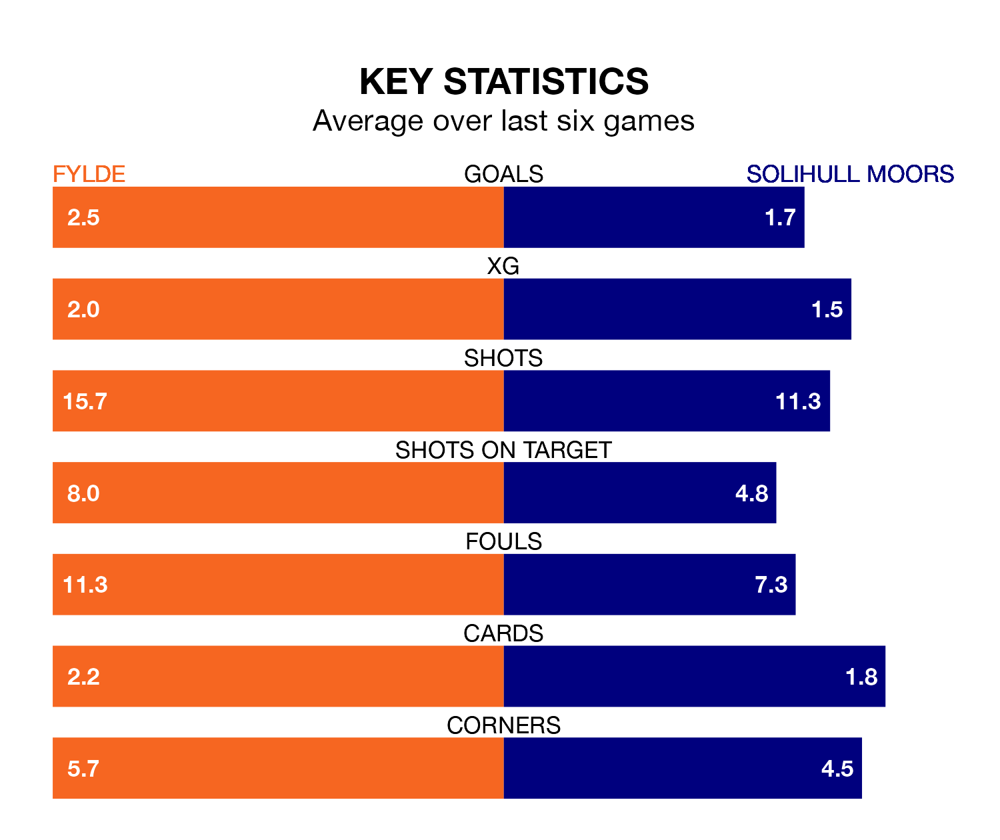

Solihull Moors travel to Fylde on late Tuesday in the National League.
The visitors come into the game on the back of a win in their last match, having beaten Rochdale 2-1 away, with goals from Callum Maycock and Tahvon Campbell.
The Coasters, meanwhile, lost their last match, 4-2 against Barnet, with their goals scored by Nicholas George Haughton.
With 54 goals in 33 games so far this season, Fylde are scoring more than average in the league with 1.6 goals per game. But they are conceding more than average too, letting in 58 goals at a rate of 1.8 per game.
Solihull Moors are also above average scorers, with 1.6 goals per game, compared to a league average of 1.5. They have conceded 1.3 goals per game.
In the last 10 years, Fylde and Solihull Moors have played each other on 13 occasions. They won five each, and they drew three times.
On average, the Coasters scored 1.3 goals and the Moors 1.2 in those matches.
Their last meeting was on September 19, when Solihull Moors won 2-1 at home.
The Moors are fourth in the table after 32 games, of which they have won 15 and drawn eight, earning 53 points.
The Coasters are 14 places behind the away side in 18th, with 10 wins and eight draws putting them on 38 points.
The hosts are in good form in the National League, with four wins and a draw from their last six games.
With three wins and a draw over that period, Solihull Moors's form is worse – they have taken 10 points from 18, compared to Fylde's 13.
Updated: 12:18 (UTC), 19/02/24